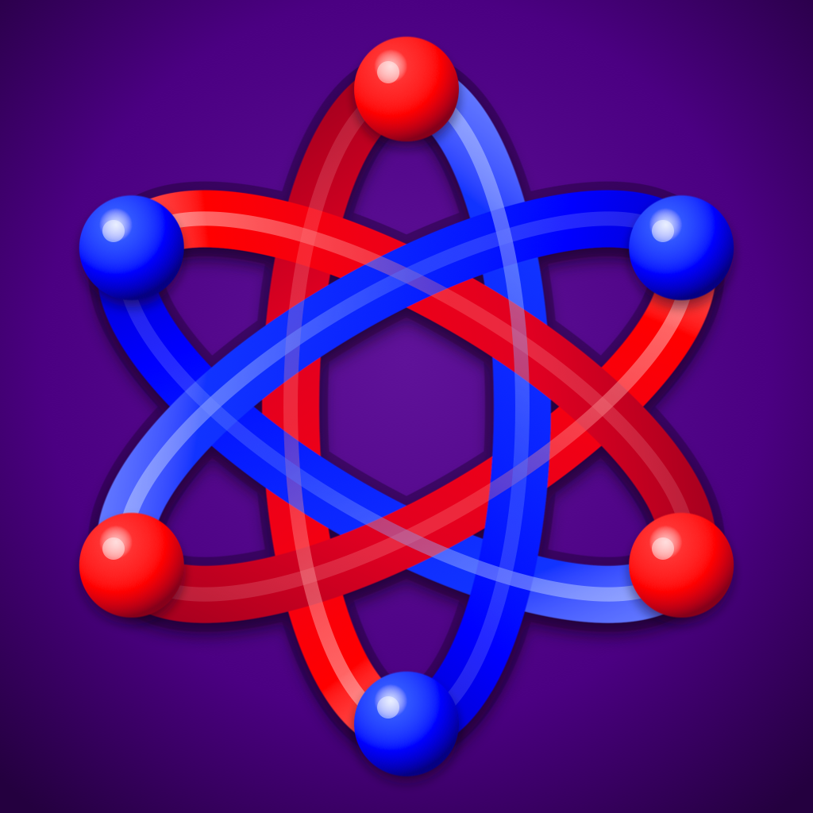
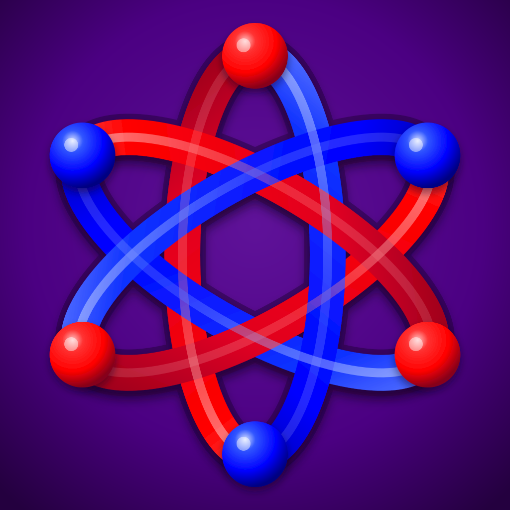
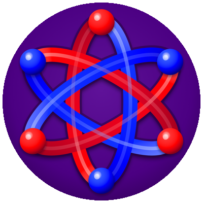
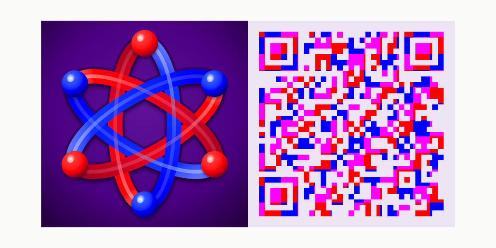
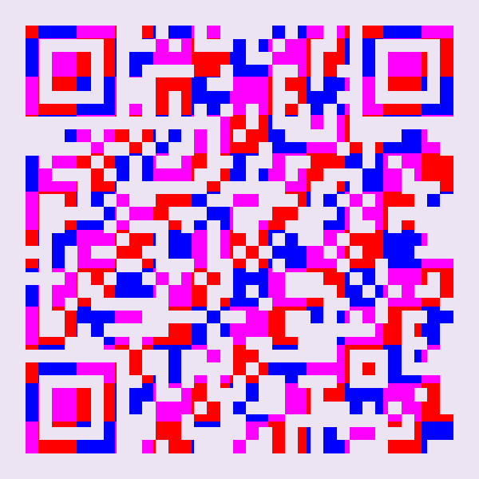

Primary purple
Brand fields and large identity surfaces.
--ui-brand-purple
ArchitrinoBrand visual referenceArchitrino brand system · review edition 01
Purple establishes the field. Red and blue preserve the polarity and path language. Light appears with purpose—through restrained fades, clear contrast, and halos reserved for action.

01 · Color
Primary purple and the deep foundation create recognition. Violet and lilac supply hierarchy and action. Red and blue retain precise explanatory roles; everything outside that spectrum is grayscale.
Brand fields and large identity surfaces.
--ui-brand-purpleReading backgrounds and surrounding space.
--ui-brand-purple-deepSelection and secondary emphasis.
--ui-brand-purple-accentQuiet highlights and labels.
--ui-brand-purple-softAvailable actions and premium light.
--ui-brand-purple-haloSparse, high-energy technical emphasis.
--ui-brand-purple-electricRed polarity and path/wake identity.
--ui-brand-redBlue polarity and path/wake identity.
--ui-brand-blueEssential text and marks on dark fields.
--ui-neutral-050Unavailable states and quiet information.
--ui-neutral-500Matched polarity blends
One central purple is accompanied by three matched pairs. Each pair sits at the same blend distance from #6A0DAD toward the application red and application blue. The arrangement may be mirrored without changing its meaning.
--ui-brand-purple
Seven preferred hue swatches: center #6A0DAD plus three matched pairs. Pair 1 is one-third from the center, pair 2 is two-thirds, and pair 3 uses the application colors #DC2626 and #2563EB. The two sides may exchange places; neither side is a starting point, a progression target, or a preferred polarity.
02 · Light
Brand light falls toward transparency over the receiving field. It does not wash toward white, gray, or a different hue.
Keep reading surfaces calm and rooted in the deep foundation.
Lilac halos identify an available action. Static objects stay quiet.
03 · Contrast
These ratios are calculated from the live shared tokens. Large decorative fields can tolerate lower contrast; reading text cannot.
White on deep——
White on primary——
Deep on soft——
White on accent——
White on blue——
White on red——
04 · Mark system
The Noether Braid is the compact identity anchor. Preserve the red and blue points, three orbit ellipses, and ribbon treatment.
Use for scalable identity work and large, crisp display.
Download SVGUse as the source for platform-specific square or circular crops.
Download PNG
Keep all braid elements inside the platform crop and clear of overlays.
Download preview
For physical or displayed surfaces that need a direct website route.
Download PNG05 · Examples
The banner, profile mark, contact card, and web surface form one system. Each adapts to its format without inventing a separate identity.
Public voice
“Explore the geometry. Read the derivation. Inspect the evidence.”
Direct, curious, serious, and welcoming. The invitation may simplify the route into the work; it may not strengthen the underlying claim.
Independent fundamental-physics research

{kind=link}
{kind=link}
{kind=link}
{kind=link}
{kind=link}